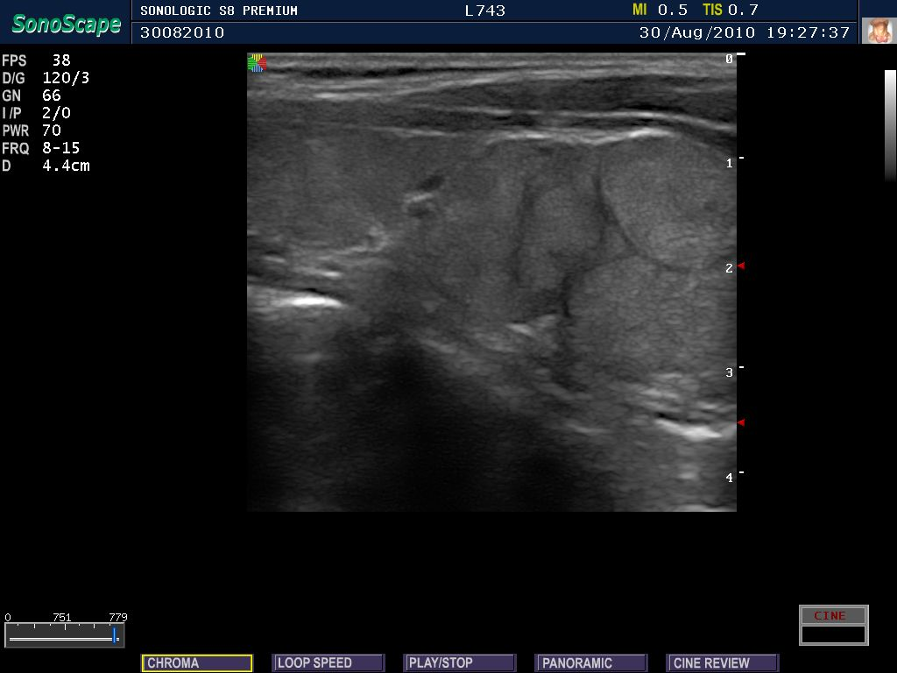

Ficha del catálogo
Tiroiditis crónica autoinmunitaria
- Sistema
- Endocrino
- Modalidad
- US
- Región
- Cuello, glándula tiroides
- Dificultad
- Intermedio
Es la causa más frecuente de hipotiroidismo en poblaciones con aporte suficiente de yodo y se debe a una infiltración linfocitaria progresiva del parénquima tiroideo. Predomina en mujeres de edad media y suele acompañarse de anticuerpos antitiroideos elevados. La glándula tiende a estar aumentada de tamaño en las fases iniciales y atrófica en las fases avanzadas.
Técnica
El ultrasonido con transductor lineal de alta frecuencia es la exploración de elección porque valora el patrón del parénquima, el volumen glandular y la vascularización. Se explora con el cuello en ligera extensión mediante barridos transversales y longitudinales de ambos lóbulos y del istmo. El Doppler color complementa el estudio y ayuda a caracterizar la fase de la enfermedad.
Qué observar
- Parénquima difusamente heterogéneo e hipoecoico respecto a la musculatura infrahioidea
- Micronódulos hipoecoicos de pocos milímetros separados por finos tabiques ecogénicos
- Bandas fibrosas lineales que confieren aspecto seudolobulado a la glándula
- Volumen glandular aumentado al inicio y reducido en las fases fibróticas
- Vascularización variable, desde escasa hasta difusamente aumentada
- Ganglios de morfología reactiva en el compartimento cervical central
Hallazgos
El parénquima pierde su ecogenicidad homogénea habitual y se vuelve heterogéneo, con múltiples focos hipoecoicos milimétricos delimitados por tabiques ecogénicos que dan un aspecto de tabique cruzado. Los contornos glandulares pueden ser ondulados y el istmo suele estar engrosado en la fase de bocio. Con el tiempo predomina la fibrosis, la glándula se retrae y el patrón se vuelve groseramente ecogénico y desestructurado.
Perlas
El fondo heterogéneo dificulta la detección y la caracterización de nódulos verdaderos, de modo que conviene comparar cualquier lesión sospechosa con el patrón del resto de la glándula antes de indicar punción. Un crecimiento rápido y doloroso sobre una tiroiditis conocida obliga a descartar linfoma tiroideo primario.
Diagnóstico diferencial
- Bocio difuso hipertiroideo
- La glándula es hipoecoica pero más homogénea, con hipervascularización intensa y clínica de tirotoxicosis.
- Tiroiditis subaguda granulomatosa
- Muestra áreas hipoecoicas mal definidas, hipovascularizadas y muy dolorosas a la compresión con el transductor, tras un cuadro viral.
- Bocio multinodular
- Los nódulos están bien delimitados y el parénquima interpuesto conserva ecogenicidad normal.
- Linfoma tiroideo
- Aparece como una masa muy hipoecoica, casi seudoquística, de crecimiento rápido sobre una glándula con tiroiditis previa.
Simuladores
- Parénquima aparentemente heterogéneo por ganancia mal ajustada o foco incorrecto
- Tiroiditis subaguda en fase de resolución con áreas hipoecoicas residuales
- Bocio multinodular con nódulos confluentes que borran el parénquima sano
Por modalidad
- TC
- No se emplea para el diagnóstico y solo muestra una glándula de densidad reducida por la pérdida de contenido de yodo.
- RM
- Aporta poco al diagnóstico y se reserva para valorar extensión cuando se sospecha linfoma asociado.
- US
- Define el patrón parenquimatoso, mide el volumen glandular, evalúa la vascularización y detecta nódulos que requieran seguimiento.
Protocolo
Ultrasonido con transductor lineal de doce a quince megahercios, foco en la profundidad de la glándula y ganancia ajustada para comparar la ecogenicidad tiroidea con la del músculo esternocleidomastoideo. Se documentan medidas de ambos lóbulos y del istmo en tres dimensiones para calcular el volumen. Se añade Doppler color con escala de baja velocidad y se explora de forma sistemática la cadena cervical.
Clasificación
No existe una clasificación radiológica específica de la enfermedad difusa, por lo que el informe describe patrón, volumen y vascularización. Los nódulos identificados sobre este fondo se categorizan con los sistemas TI-RADS habituales, que puntúan composición, ecogenicidad, forma, márgenes y focos ecogénicos para decidir el seguimiento o la punción.
Errores frecuentes
- Informar todo foco hipoecoico del patrón difuso como nódulo verdadero
- No comparar la ecogenicidad glandular con la del músculo adyacente
- Pasar por alto una masa dominante de crecimiento rápido dentro del parénquima heterogéneo

tiroides tiroiditis autoinmunitaria hipotiroidismo parénquima heterogéneo ultrasonido tiroideo micronódulos endocrino